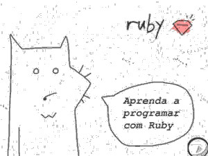
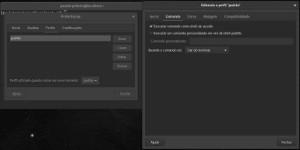

Iniciando no Ruby
Antes de sair por aí programando e instalando gems como um doido, convém habituar-se a preparar o ambiente para cada novo projeto.

Vim do Python e lá me acostumei com as virtualenv. No mundo Ruby temos dois elementos, que, eu acredito, somados são superiores, e me lembram um pouco de como é feito em Perl.
A grande utilidade de garantir a versão do interpretador, é, especialmente, se você está desenvolvendo em uma máquina, e tem que executar em outra. Garante-se a maior proximidade possível entre o ambiente de desenvolvimento e o de produção.
Eu, por exemplo, agora estou num projeto no OpenShift, e lá o ruby de maior versão é o 2.3.0, por enquanto. Pra minha comodidade, uso a mesma versão aqui e lá, já que a versão de minha distribuição está mais atualizada.
A primeira coisa é controlar qual versão de Ruby você está usando em determinado projeto. Essa é a tarefa do RVM - Ruby Version Manager.
Uma vez instalado (instruções na página do RVM), a cada novo projeto começamos com:
$ rvm list known
# MRI Rubies
[ruby-]1.8.6[-p420]
[ruby-]1.8.7[-head] # security released on head
[ruby-]1.9.1[-p431]
[ruby-]1.9.2[-p330]
[ruby-]1.9.3[-p551]
[ruby-]2.0.0[-p648]
[ruby-]2.1[.8]
[ruby-]2.2[.4]
[ruby-]2.3[.0]
[ruby-]2.2-head
ruby-head
(mais uma penca de opções)
Sendo um usuário Linux, o que me interessa aqui são as opções em MRI Rubies. Vou na que me interessa:
rvm install 2.3
Para usá-la, digite rvm use 2.3, e para torná-la padrão, digite o comando rvm use 2.3 --default. Para voltar a usar o interpretador instalado em seu sistema, execute o comando rvm system
Agora vamos para o módulos, ou no jargão Ruby, Gems. Cada projeto ou experimento que fazemos necessitam de algum código externo pronto.
Para nosso novo projeto, vamos criar um gemset exclusivo, usando a versão 2.3 do Ruby:
rvm use 2.3 # ou rvm use default
rvm gemset create novoprojeto
Depois de criada essa estrutura, para "entrar" nela, basta um:
rvm use 2.3@novoprojeto
Para não ficar digitando a toda troca de projeto, muito menos ficar lembrando que versão usar em cada um, e muito menos ficar criando scripts para ativar o ambiente adequado a cada projeto, pode-se criar arquivos de configuração na base do projeto.
Por exemplo, se tenho um projeto em ~/novoprojeto, crio o arquivo ~/novoprojeto/.ruby-gemset contendo o nome do gemset:
novoprojeto
E o arquivo ~/novoprojeto/ruby-version contendo a versão do Ruby:
2.3
E toda vez que entrar nesse diretório, estarei usando a versão indicada com o conjunto de gems indicado, sem ter que executar qualquer comando.
Se você mudar de diretório, para outro projeto, que tenha esses arquivos com versões diferentes, o rvm prepara tudo para você de forma transparente. Se por algum motivo, precisar do ruby instalado no sistema, basta um rvm system.
O rvm altera o seu .profile para que possa trabalhar. Se for usar o gnome-terminal, altere as configurações dele para que execute sempre como um login shell, no meu caso, "Executar comando como shell de sessão":

-x-
Dica do colega Igor Oliveira de um tutorial sobre o tema: https://www.digitalocean.com/community/tutorials/how-to-install-ruby-on-rails-on-ubuntu-14-04-using-rvm